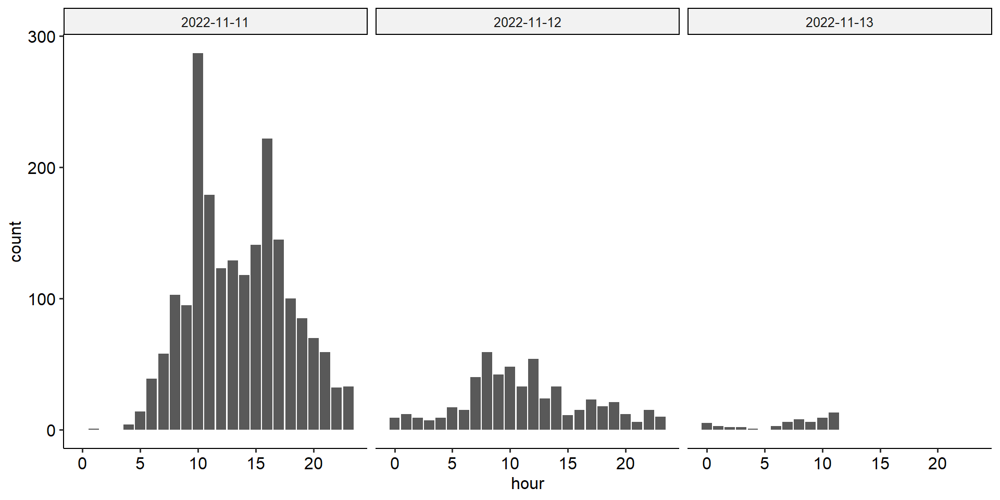

API-Access – Twitter
Digital behavioral data - Session 04
16.11.2022
Seminarplan
| Sitzung | Datum | Thema | Referent*Innen |
|---|---|---|---|
| 1 | 26.10.2022 | Kick-Off Session | Christoph Adrian |
| 2 | 02.11.2022 | DBD: Einführung und Überblick | Christoph Adrian |
| 3 | 09.11.2022 | DBD: Datenerhebung | Christoph Adrian |
| 4 | 16.11.2022 | API-Access (I): Twitter | Falk |
| 5 | 23.11.2022 | API-Access (II): YouTube | Denisov |
| 6 | 30.11.2022 | API-Access (II): Reddit | Landauer |
| 7 | 07.12.2022 | Webscraping: TikTok | Brand & Kocher |
| 8 | 14.12.2022 | Exkurs: DBD Analyse mit R | Christoph Adrian |
| WEIHNACHTSPAUSE | |||
| 9 | 12.01.2023 | ESM: m-path | Dörr |
| 10 | 19.01.2023 | Data Donations | Hofmann & Wierzbicki |
| 11 | 26.01.2023 | PUFFER | |
| 12 | 02.02.2023 | Guest Lecture: Linking DBD & Survey data | Johannes Breuer |
| 13 | 09.02.2023 | Semesterabschluss & Evaluation | Christoph Adrian |
Agenda
Verständnis- & Diskussionsfragen
Ihre Fragen aus MS Teams
Vielen Dank für Ihre Fragen!
Was genau kann unter “N-gram analysis” verstanden werden?
Um semantische Muster der Daten bei der Twitter-Forschung zu erkennen, wendet man häufig Text-Mining-Methoden an. Wie wird dabei mit ironischen Aussagen oder Umgangssprache umgegangen? Sind solche Analysemethoden somit überhaupt verlässlich oder kann man diesbezüglich mit einer hohen Fehleranfälligkeit rechnen?
Viele Studien verwenden Twitter in der Forschung. Dabei werden verschiedene Methoden eingesetzt. Welche Methode (aus Table 4 des Pflichtpapers) würden Sie am meisten empfehlen? Welche ist am aussagekräftigsten? Oder ist das Kontext-bezogen und eine allgemeine Aussage kann nicht getätigt werden?
Interessant wäre es in diesem Kontext vielleicht nicht nur Twitter, sondern eine andere Social-Media-Plattform zu betrachten, zum Bsp. Facebook. Würden die dominierenden Themen der Facebook-basierten Forschung ähnlich wie bei Twitter ausfallen? Wie sieht wohl die Entwicklung der Themen in den letzten Jahren aus?
Interessant wäre es in diesem Kontext vielleicht nicht nur Twitter, sondern eine andere Social-Media-Plattform zu betrachten, zum Bsp. Facebook. Würden die dominierenden Themen der Facebook-basierten Forschung ähnlich wie bei Twitter ausfallen? Wie sieht wohl die Entwicklung der Themen in den letzten Jahren aus?
Twitter wird unter anderem für „Opinion Mining” verwendet. Jedoch kann es gerade bei polarisierenden Themen vorkommen, dass sich vor allem Personen mit extremer Meinung äußern und die Personen mittig im Spektrum zurückhalten. Wie kann man einen solchen Bias ausgleichen?
Es kann nur ein kleiner Bruchteil der Twitter-Kommunikation per API abgefragt werden, der zudem noch veraltet ist. Inwieweit sind Trend-Analysen überhaupt möglich? Gibt es Möglichkeiten Twitter-Kommunikation zu “streamen”?
Eine gute Studie lebt von den Kriterien der Validität, Objektivität und Reliabilität. Inwieweit können diese Kriterien bei einer Twitter-Analyse erfüllt werden?
Was sind die Gründe für den Rückgang der Forschung mit Twitter-Daten rund um das Thema Marketing?
Group Activity
Suchanfrage erstellen & Daten sammeln
Twitter case study - Teil 1: Suchen & Sammeln
Für die Nutzung des Tweet Downloader benötigen Sie einen Bearer Token. Diesen finden Sie auf MS Teams.
Wäheln Sie eine der folgenden Szenarien aus und erstellen Sie eine Suchanfrage mit Hilfe des Twitter Query Builder:
Alle Tweets eines bestimmten Accounts seit dem 01.10.2022
Alle Tweets (ohne Retweets) mit dem Hashtag
#karnevaloder#wokwmam letzten Wochenende
… und ziehen sich die Tweets als .csv & .json mit Hilfe des Tweet Downloader (benötigt Chrome, Edge oder Opera)
Format der Daten & potentielle Analyse(n)
Twitter case study - Teil 2: Sichten & Konzipieren
Inspizieren Sie anschließend die Datensätze und schauen Sie, welche Informationen Ihnen geliefert werden.
- Wie unterscheiden sich die Datenformate?
Auf Basis der gesichteten Daten …
Wie würden Sie die Daten analyiseren bzw. welche Aspekte würden Sie sich anschauen?
Welche potentielle Fragestellungen könnten Sie spontan entwickeln?
Beispielhafte Auswertungen
Im Fokus: #Karneval
Setup und Datensammlung mit R
#Karneval im Fokus: Hintergrund und Datensammelung
Alle Tweets herunterladen, die
#Karnevalenthaltenzwischen 00:00 am 11.11.2022 und 12:00 am 13.12.2022 erschienen sind
Weiterverarbeitung und Auswertung der Daten mit R, Fokus auf Paket academictwitteR (Barrie & Ho, 2021)
Kurzer Blick in die Daten
#Karneval im Fokus: Datenübersicht
Rows: 2,637
Columns: 37
$ tweet_id <chr> "1590981439457464321", "1590981390123892740", "…
$ user_username <chr> "truthonearth3", "Auno94", "HaiAriane", "ElCobr…
$ text <chr> "RT @faqyoutoo: Ab heute 11:11 h dürfen wir uns…
$ created_at <chr> "2022-11-11T08:15:08.000Z", "2022-11-11T08:14:5…
$ lang <chr> "de", "de", "de", "und", "und", "und", "und", "…
$ possibly_sensitive <lgl> FALSE, FALSE, FALSE, FALSE, FALSE, FALSE, TRUE,…
$ author_id <chr> "1486309822832287746", "2745840416", "995739344…
$ source <chr> "Twitter for Android", "Twitter for Android", "…
$ conversation_id <chr> "1590981439457464321", "1590981390123892740", "…
$ in_reply_to_user_id <chr> NA, NA, NA, NA, NA, NA, NA, NA, NA, NA, NA, NA,…
$ user_protected <lgl> FALSE, FALSE, FALSE, FALSE, FALSE, FALSE, FALSE…
$ user_description <chr> "I♥️Trump\nAnd Trump ♥️US.", "Zertifizierter Alma…
$ user_profile_image_url <chr> "https://pbs.twimg.com/profile_images/158736121…
$ user_pinned_tweet_id <chr> "1591132482271080448", "1346065459297267712", N…
$ user_verified <lgl> FALSE, FALSE, FALSE, FALSE, FALSE, FALSE, FALSE…
$ user_name <chr> "truthonearth", "Auno", "Pirschelbär", "Michael…
$ user_created_at <chr> "2022-01-26T12:07:54.000Z", "2014-08-19T17:42:0…
$ user_location <chr> NA, "Köln, Deutschland", NA, "Bonn, Germany", N…
$ user_url <chr> NA, "https://t.co/lodH0xUg0C", NA, NA, NA, NA, …
$ retweet_count <int> 2, 0, 0, 178, 178, 178, 178, 178, 178, 178, 178…
$ like_count <int> 0, 0, 1, 0, 0, 0, 0, 0, 0, 0, 0, 0, 0, 0, 0, 0,…
$ quote_count <int> 0, 0, 0, 0, 0, 0, 0, 0, 0, 0, 0, 0, 0, 0, 0, 0,…
$ user_tweet_count <int> 840, 5851, 495, 110593, 5045, 1351, 932, 29967,…
$ user_list_count <int> 0, 0, 0, 77, 0, 1, 1, 0, 0, 1, 1, 5, 3, 73, 18,…
$ user_followers_count <int> 268, 197, 18, 1260, 54, 109, 71, 372, 126, 145,…
$ user_following_count <int> 1102, 1124, 118, 476, 436, 403, 411, 748, 1339,…
$ sourcetweet_type <chr> "retweeted", NA, NA, "retweeted", "retweeted", …
$ sourcetweet_id <chr> "1590967777762086912", NA, NA, "159097615399271…
$ sourcetweet_text <chr> "Ab heute 11:11 h dürfen wir uns wieder verklei…
$ sourcetweet_lang <chr> "de", NA, NA, "und", "und", "und", "und", "und"…
$ sourcetweet_author_id <chr> "946619921454247937", NA, NA, "529561909", "529…
$ datetime <dttm> 2022-11-11 08:15:08, 2022-11-11 08:14:57, 2022…
$ date <date> 2022-11-11, 2022-11-11, 2022-11-11, 2022-11-11…
$ hour <int> 8, 8, 8, 8, 8, 8, 8, 8, 8, 8, 8, 8, 8, 8, 8, 8,…
$ min <int> 15, 14, 14, 14, 13, 13, 13, 13, 13, 13, 13, 12,…
$ hms <time> 08:15:08, 08:14:57, 08:14:29, 08:14:29, 08:13:…
$ hm <time> 08:15:00, 08:14:00, 08:14:00, 08:14:00, 08:13:…Deutsch, Hashtags, Englisch …
#Karneval im Fokus: Sprache der Tweets
x <character>
# total N=2637 valid N=2637 mean=6.85 sd=5.06
Value | N | Raw % | Valid % | Cum. %
---------------------------------------
de | 2180 | 82.67 | 82.67 | 82.67
und | 201 | 7.62 | 7.62 | 90.29
en | 112 | 4.25 | 4.25 | 94.54
qme | 43 | 1.63 | 1.63 | 96.17
es | 18 | 0.68 | 0.68 | 96.85
tr | 10 | 0.38 | 0.38 | 97.23
fr | 9 | 0.34 | 0.34 | 97.57
nl | 9 | 0.34 | 0.34 | 97.91
pl | 8 | 0.30 | 0.30 | 98.22
in | 7 | 0.27 | 0.27 | 98.48
no | 7 | 0.27 | 0.27 | 98.75
qht | 6 | 0.23 | 0.23 | 98.98
ca | 5 | 0.19 | 0.19 | 99.17
da | 4 | 0.15 | 0.15 | 99.32
cs | 3 | 0.11 | 0.11 | 99.43
eu | 3 | 0.11 | 0.11 | 99.54
fi | 3 | 0.11 | 0.11 | 99.66
cy | 2 | 0.08 | 0.08 | 99.73
et | 2 | 0.08 | 0.08 | 99.81
ja | 2 | 0.08 | 0.08 | 99.89
lt | 2 | 0.08 | 0.08 | 99.96
is | 1 | 0.04 | 0.04 | 100.00
<NA> | 0 | 0.00 | <NA> | <NA>Am 11.11. um 10:11?
#Karneval im Fokus: Tweets im Zeitverlauf
UTC statt UTC+1
#Karneval im Fokus: Stärkste Konzentration von Tweets
hm <numeric>
# total N=2637 valid N=2637 mean=48463.12 sd=16629.59
Value | N | Raw % | Valid % | Cum. %
------------------------------------------
10:11:00 | 59 | 2.24 | 2.24 | 2.24
10:12:00 | 14 | 0.53 | 0.53 | 2.77
10:13:00 | 12 | 0.46 | 0.46 | 3.22
16:54:00 | 12 | 0.46 | 0.46 | 3.68
10:10:00 | 10 | 0.38 | 0.38 | 4.06
11:29:00 | 10 | 0.38 | 0.38 | 4.44
16:53:00 | 10 | 0.38 | 0.38 | 4.82
n < 10 | 2510 | 95.18 | 95.18 | 100.00
<NA> | 0 | 0.00 | <NA> | <NA>